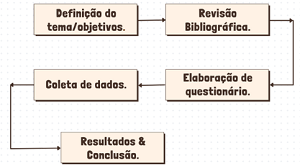

O racismo está enraizado na humanidade desde a expansão marítima com a exploração e domínio de territórios e povos. Mesmo após séculos de tentativas de combatê-lo, o racismo perdura no cotidiano, principalmente, por meio da verbalização e a partir disso, percorre trajetórias que se encontram com muitas outras violências. Visto que diversas expressões racistas permanecem em nosso cotidiano, o objetivo deste trabalho é frisar para a sociedade, em especial a comunidade escolar, sobre como uma linguagem antirracista pode influenciar na descontinuação e combate ao racismo, além de mostrar que o conhecimento previne até mesmo perca de pontos na produção de uma redação.
Metodologia

Impacto e relevância da pesquisa
O discurso tem um grande poder e uma capacidade assombrosa de fazer a mudança. Visto isso, este trabalho encorajará os jovens da nossa comunidade escolar a reverem o vocabulário e revisitá-lo continuamente a fim de eliminar termos e expressões racistas do nosso cotidiano e produções de textos.
Pesquisa realizada na escola EEEP Osmira Eduardo de Castro
imagens da produção da pesquisa
Resultado e/ou conclusão
Com os dados coletados, percebemos que a maioria das pessoas não conhecem a real origem de diversas palavras utilizadas atualmente, mas que possuem teor racista, visto que a ressignificação “apagou” seu verdadeiro significado, e o interesse por conhecê-las quase não é despertado. Contudo, podemos modificar e influenciar o contexto com momentos de conversa/debates dentro e fora da escola, cartazes informativos sobre o assunto ou distribuição de cartilhas. Dessa maneira, auxiliando principalmente os jovens, a adquirir a consciência de que pequenas mudanças como uma linguagem antirracista pode influenciar em diversos aspectos de suas vidas, até mesmo na produção de textos.
 19.31.35.png)